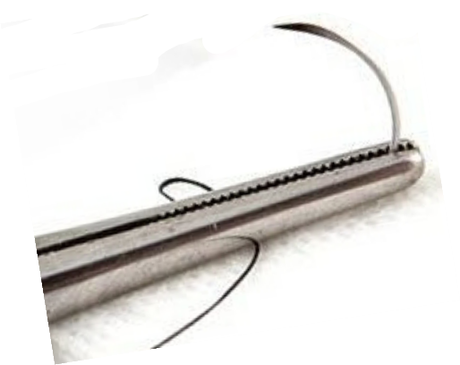

A biological adhesive used to promote tissue healing and stop bleeding during surgery.
Surgical devices like screws or plates used to stabilize and hold tissues or bones in place.
The surgical connection of two sections of the gastrointestinal tract.
The process of stopping bleeding, either naturally or through medical intervention.
A substance used to promote the clotting of blood and stop bleeding during surgery.
A water-based gel used in wound care to maintain a moist environment and promote healing.
A medical fixation involving the breakdown of a compound due to reaction with water, relevant in absorbable materials.
An unexpected problem occurring during surgery, such as bleeding or organ injury.
A minimally invasive surgical procedure involving small incisions and the use of a camera-equipped laparoscope.
A thread or wire used in surgery to tie off blood vessels or tissues to prevent bleeding.
Surgical removal of one or more lymph nodes, typically to prevent the spread of cancer.
The surgical removal of one or both breasts, usually to treat or prevent breast cancer.
A protective layer that prevents bacteria from penetrating a surface, often used in wound dressings.
Surgery performed through small incisions, less damage, and promoting faster recovery.
The repair of the mesothelium, a membrane lining, usually after injury or surgical intervention.
The surgical use of the omentum (a fold of the peritoneum) to cover or support internal organs or wounds.
The membrane lining the abdominal cavity and covering abdominal organs.
Scar tissue that forms after surgery.